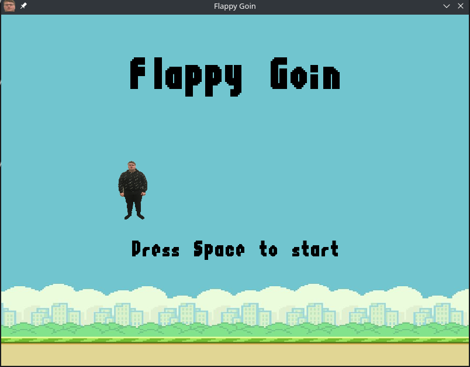

My Projects
FlappyGoin

FlappyGoin is a game I made. It's a ripoff of the popular game flappybird, where I changed the bird with a classmate. It's written in the programming language python.
GoinInvaders
GoinInvaders is a game I made. It's a ripoff of the popular game spaceinvaders, where I changed the characters with a classmate and a teacher. It's written in the programming language python.
GoinSweeper
GoinSweeper is a game I made. It's a ripoff of the popular game MineSweeper, where I changed the bomb/mine with a classmate. It's written in the programming language python.